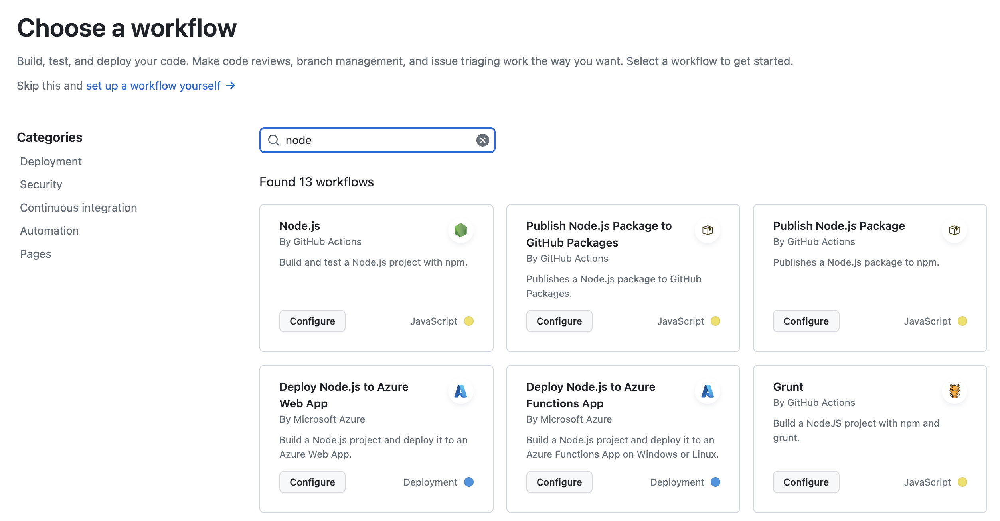
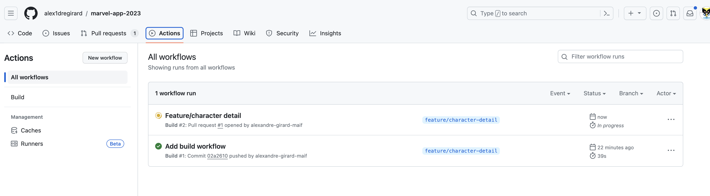
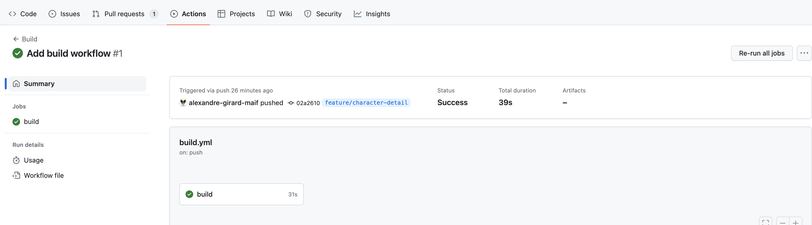
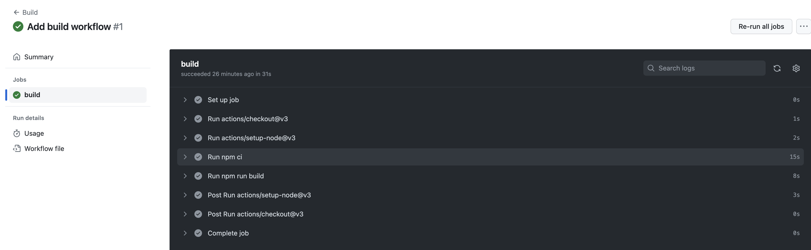

Actions
Les Actions github sont des scripts qui peuvent être déclenchés par des événements sur le dépôt. Ils sont stockés dans le dossier .github/workflows du dépôt. Les actions sont définies dans un fichier YAML.
Les actions peuvent être déclenchées par différents événements, elles permettent d'automatiser des tâches.
Les actions peuvent être déclenchées par différents événements :
push: lorsqu'un commit est poussé sur le dépôtpull_request: lorsqu'une pull request est créée ou mise à jourschedule: à intervalle régulierworkflow_dispatch: lorsqu'un événement est déclenché manuellement
Nous allons plus particulièrement nous intéresser aux actions qui se déclenchent sur des événements de Push et de Pull Request. En effet afin de sécuriser le dépôt, nous allons mettre en place des actions qui vont vérifier que le code qui est poussé sur le dépôt est conforme à certaines règles.
Il s'agit de la première étape de la mise en place d'un processus de Continuous Integration (CI). L'intégration continue est un processus qui permet de vérifier que le code qui est poussé sur le dépôt est conforme à certaines règles. on s'assure ainsi en continu que le code est fonctionnel et qu'il respecte les règles de codage que l'on a définies.
Création d'une action
Exemple d'un workflow prédéfini
github propose un certain nombre de workflow prédéfinis en fonction du langage utilisé. Nous allons utiliser le workflow Node.js qui permet de lancer des actions sur un projet Node.js.

Fichier YAML généré par github :
# This workflow will do a clean installation of node dependencies, cache/restore them, build the source code and run tests across different versions of node
# For more information see: https://docs.github.com/en/actions/automating-builds-and-tests/building-and-testing-nodejs
name: Node.js CI
on:
push:
branches: [ "develop" ]
pull_request:
branches: [ "develop" ]
jobs:
build:
runs-on: ubuntu-latest
strategy:
matrix:
node-version: [14.x, 16.x, 18.x]
# See supported Node.js release schedule at https://nodejs.org/en/about/releases/
steps:
- uses: actions/checkout@v3
- name: Use Node.js ${{ matrix.node-version }}
uses: actions/setup-node@v3
with:
node-version: ${{ matrix.node-version }}
cache: 'npm'
- run: npm ci
- run: npm run build --if-present
- run: npm test
Cet exemple contient plusieurs parties :
- La partie
namepermet de donner un nom au workflow. C'est le nom qui sera affiché dans l'interface de github. - La partie
onpermet de définir les événements qui vont déclencher le workflow. Dans cet exemple, le workflow sera déclenché sur les événementspushetpull_requestsur la branchedevelop. - La partie
jobspermet de définir les jobs qui vont être exécutés par le workflow. Dans cet exemple, il n'y a qu'un seul job qui s'appellebuild.- La sous-partie
buildpermet de définir un job. Dans cet exemple, le job s'appellebuild.- La sous-partie
runs-onpermet de définir l'environnement sur lequel le job va être exécuté. Dans cet exemple, le job va être exécuté sur une machineubuntu-latest. Github propose plusieurs environnements : Linux, Windows, MacOS. Sauf cas particulier, on utilise généralement l'environnementubuntu-latest. - La sous-partie
strategypermet de définir une matrice, ici on définit une matrice de versions de Node.js. Dans cet exemple, le job va être exécuté sur les versions 14, 16 et 18 de Node.js. - La sous-partie
stepspermet de définir les étapes qui vont être exécutées par le job. Dans cet exemple, il y a 5 étapes qui vont être exécutées :actions/checkout@v3: permet de récupérer le code du dépôtactions/setup-node@v3: permet de configurer l'environnement Node.jsnpm ci: permet d'installer les dépendances du projetnpm run build --if-present: permet de construire le projet si un scriptbuildest défini dans le fichierpackage.jsonnpm test: permet de lancer les tests
- La sous-partie
- La sous-partie
La documentation de github permet de comprendre le fonctionnement de chaque partie du fichier YAML : https://docs.github.com/en/actions/learn-github-actions/workflow-syntax-for-github-actions
Exécution d'une action
Pour les actions qui se déclenchent sur un événement push, l'action est exécutée sur la branche qui a déclenché l'événement. Pour les actions qui se déclenchent sur un événement pull_request, l'action est exécutée sur la branche de la pull request.
Dès qu'un événement est déclenché, le workflow est exécuté. On peut suivre l'exécution du workflow dans l'onglet Actions du dépôt.

Pour chaque workflow, on peut voir son état, son nom, la branche sur laquelle il a été déclenché, la date de déclenchement, le commit qui a déclenché le workflow, le numéro de la pull request si le workflow a été déclenché par une pull request, le temps d'exécution.
Dans cet exemple, le workflow Build a été déclenché par un événement push sur la branche feature/character-detail et est en succès. Il est également en cours d'exécution pour la pull request #1.
En cliquant sur le nom du workflow, on peut voir les détails de l'exécution du workflow.

On peut ensuite voir les détails de chaque job.

Ici, on peut voir que le job build contient 8 étapes. Certaines sont des étapes prédéfinies par github:
- Set up job
- Complete job
D'autres sont des étapes définies dans le fichier YAML, ce sont celles-ci qui nous intéressent :
- checkout
- setup-node
- npm ci
- npm run build
Elles peuvent générer une post-action:
- setup-node
- checkout
Les étapes prédéfinies par github permettent de configurer l'environnement d'exécution du job. Les post-actions permettent de nettoyer l'environnement d'exécution du job.
Aller plus loin
On peut faire beaucoup de choses avec les actions github, aussi bien en réaction à des événements sur le dépôt qu'en déclenchant des événements sur le dépôt (manuellement ou en fonction d'un calendrier). Mais nous n'allons pas rentrer dans les détails ici.
Pour aller plus loin, vous pouvez consulter la documentation de github : https://docs.github.com/en/actions